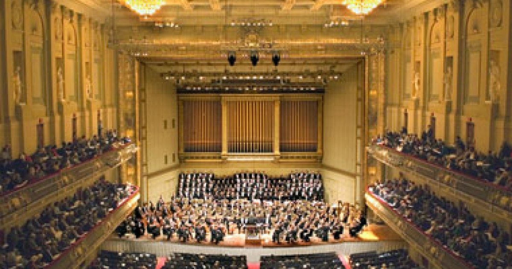

Boston Symphony Orchestra (BSO)
The Boston Symphony Orchestra (BSO) is an American orchestra based in Boston, Massachusetts. It is the second-oldest of the five major American symphony orchestras commonly referred to as the "Big Five". Founded by Henry Lee Higginson in 1881, the BSO performs most of its concerts at Boston's Symphony Hall and in the summer performs at Tanglewood.
Since its founding, the orchestra has had 17 music directors, including George Henschel, Serge Koussevitzky, Henri Rabaud, Erich Leinsdorf, William Steinberg and James Levine. Andris Nelsons is the current music director of the BSO. Seiji Ozawa has the title of BSO music director laureate. Bernard Haitink has held the title of conductor emeritus of the BSO. The orchestra has made gramophone recordings since 1917 and has occasionally played on soundtrack recordings for films including Schindler's List.
Related ensembles
The Boston Pops Orchestra, the Boston Symphony Orchestra minus its principal players, was founded in 1885, and plays lighter, more popular classics, and show tunes. Arthur Fiedler was the conductor who did the most to increase the fame of the Boston Pops over his tenure from 1930 to 1979. Film composer John Williams succeeded Fiedler as the conductor of the Pops from 1980 to 1993. Since 1995, the conductor of the Boston Pops has been Keith Lockhart.
The Boston Symphony Chamber Players were launched in 1964. Today they are the only chamber ensemble composed of principal players from an American symphony orchestra. In addition to regular performances in Boston and Tanglewood, they have performed throughout the United States and Europe. They have also recorded for RCA Victor, DG, Philips, and Nonesuch.
Performing with the BSO and Boston Pops for major choral works is the Tanglewood Festival Chorus. Organized in 1970 by its founding director, John Oliver, the Chorus comprises over 300 volunteer singers. Before the creation of the Tanglewood Festival Chorus, and for some time after, the BSO frequently employed the New England Conservatory Chorus conducted by Lorna Cooke DeVaron, Chorus Pro Musica, Harvard Glee Club and Radcliffe Choral Society. In February 2017, the BSO announced the appointment of James Burton as the new conductor of the Tanglewood Festival Chorus and as the newly created BSO Choral Director, both with immediate effect. Burton founded the Boston Symphony Children's Choir in 2018.